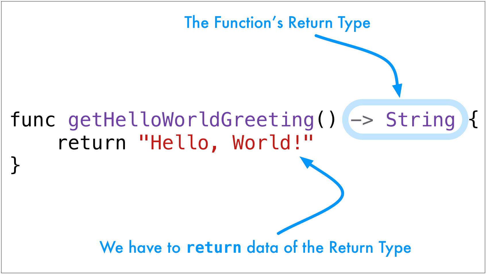

Every time we call it we get another Hello, World!
1 2 3 | Hello, World!
Hello, World!
Hello, World!
|
Functions can send data back to us. We say that the functions returns a value. Here's how we do this in Swift.
1 2 3 | func getHelloWorldGreeting() -> String {
return "Hello, World!"
}
|
Swift functions have the return syntax in a different place than most languages. It's at the end of the function declaration, not at the beginning. The syntax is called the return arrow. It's a dash and a greater-than character.
->
When we call a function that returns something we have to do something with the value it returns. We can store it in a variable or a constant.
1 2 | let greeting = getHelloWorldGreeting()
println(greeting)
|
We can output the results directly.
1 | println(getHelloWorldGreeting())
|
Type the getHelloWorldGreeting() function below and call it a few times after the function declaration. Catch the returned data in a constant, a variable, and in a println().